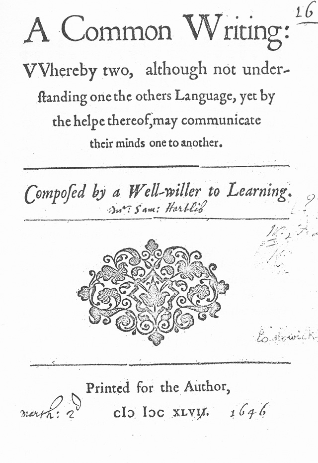

Introduction


One solution concept: Interlinguas

Francis Lodowyck, 1652
Applied to MT starting in 1970s and 1980s
Discussions of this:
- Hutchins, Machine Translation, 1986, ch. 15
- Trujillo, Translation Engins, 1999, ch. 7
So, what's new? What's the state of the art?
Perhaps the IAMTC project!